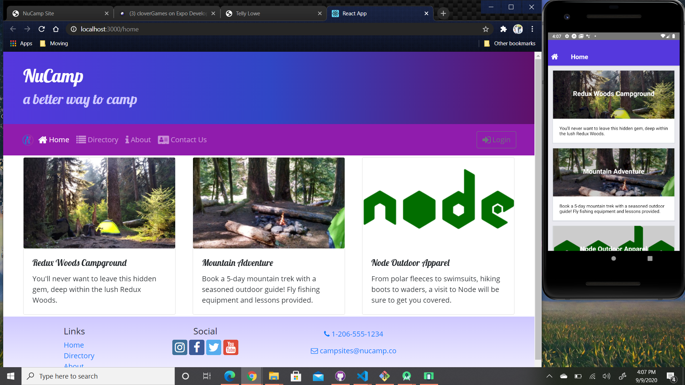
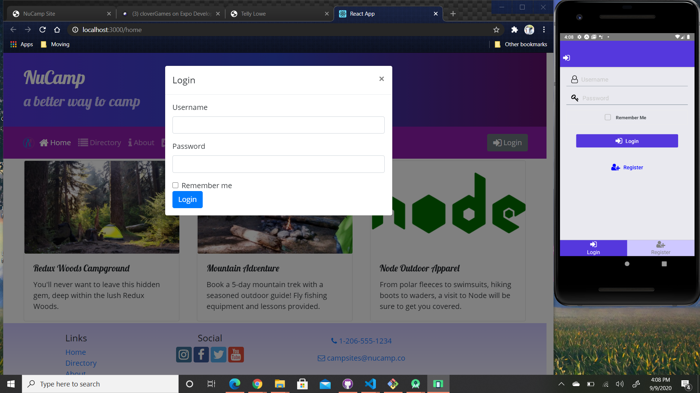
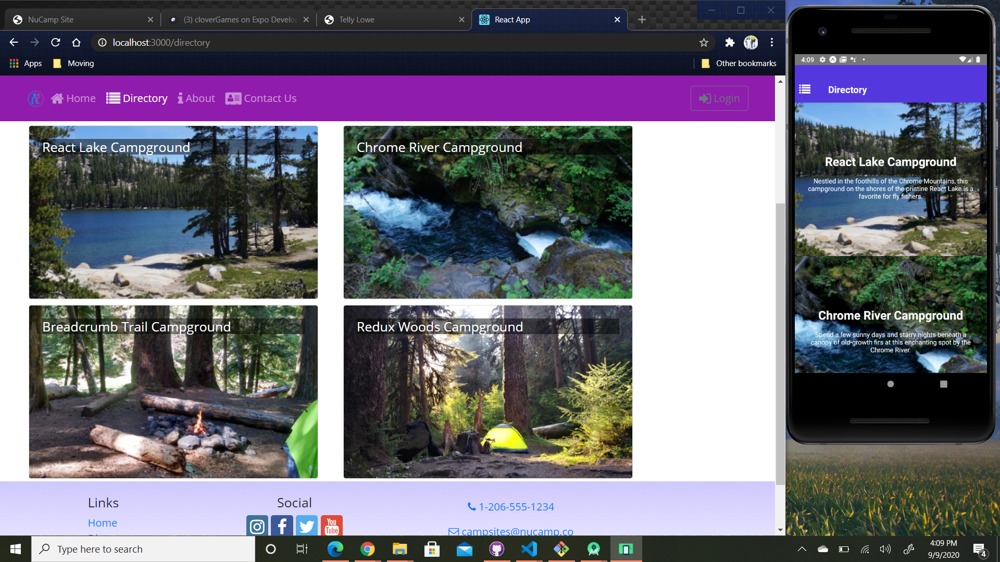
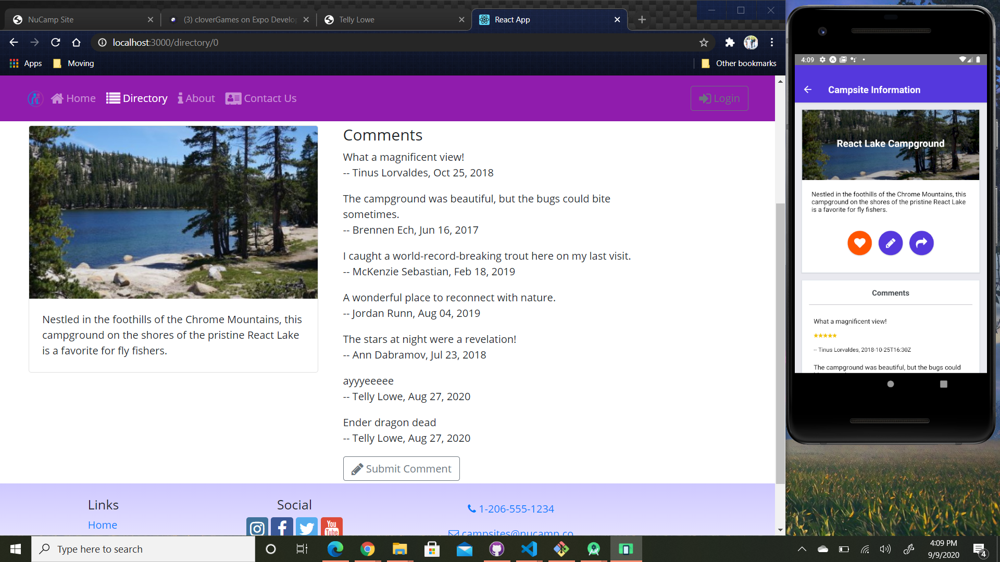
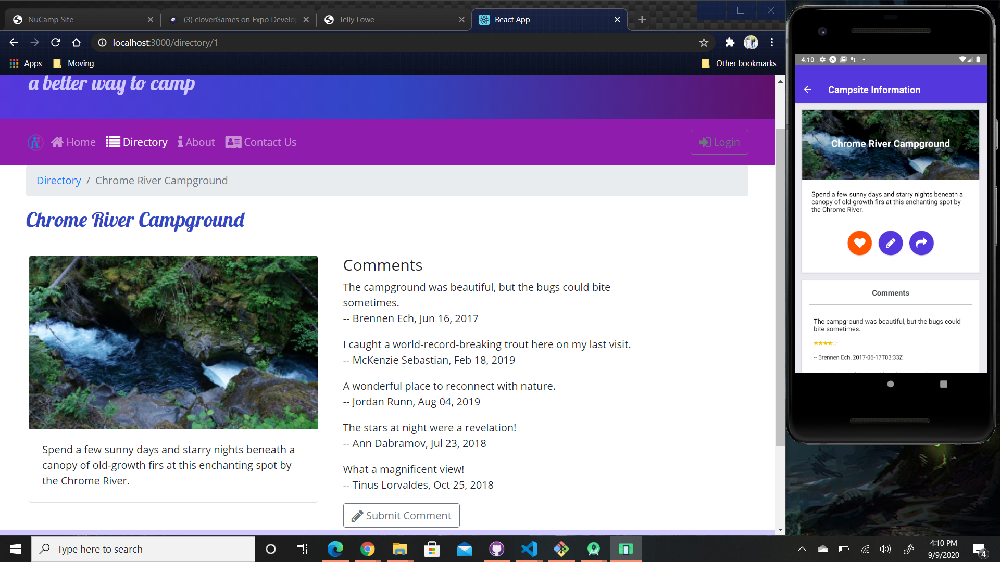
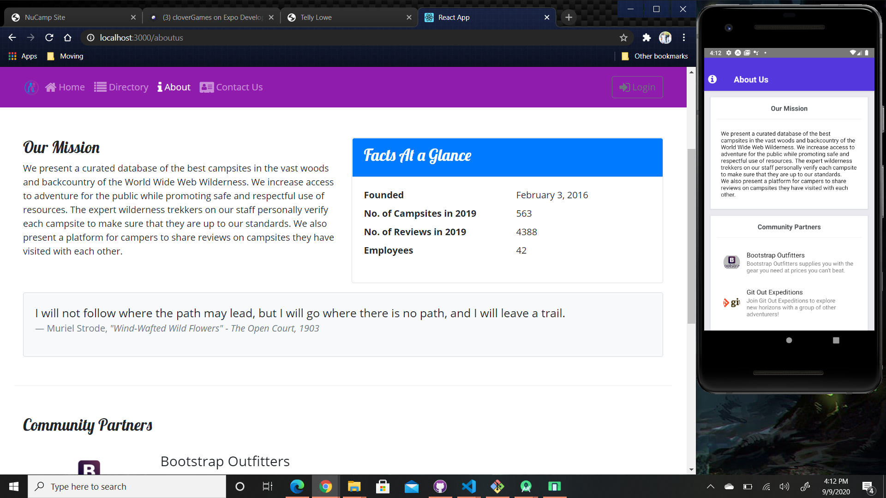
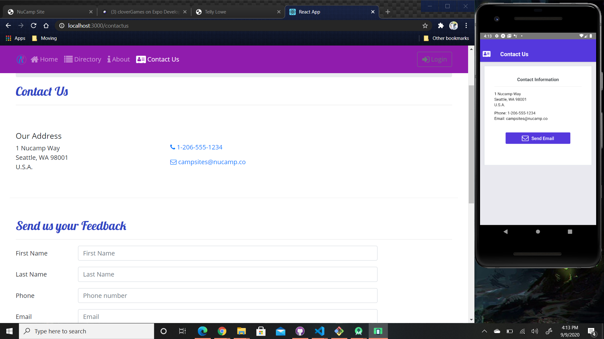

Overview







A fully responsive website with Redux that includes multiple components, animations, login, and saved state data. Along with the website there is a App to match the website with unique mobile features such as toast notifications, responsive icons, and access to camera features.
The picture above is from local server. To further check the code in detail feel free to visit my github page.